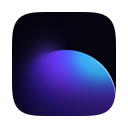
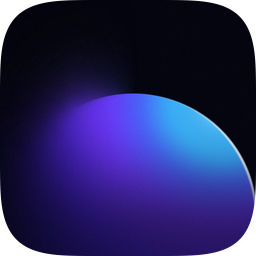

лестница macOS · каждая ступень в натуральную величину;
2× подставляет система по srcset — это и есть Contents.json набора
под ступенью: поле / тело · доля тела
доля не постоянна: на 16 и 32 полей намеренно меньше —
иначе мелкая иконка теряет то, чем читается
16 pt
1 / 14
0,8750
32 pt
2 / 28
0,8750

128 pt
12 / 104
0,8125

256 pt
25 / 206
0,8047